资源库主要提供各类资源（构件、系统、文档、文字、数据集等）的分类、上传、下载、用户查阅、版本划分等管理功能，使得用户可以方便地存储、管理并使用所需的资源。
点击查看如何管理组织资料？
4.13.2.1 资源库管理员
资源库管理员拥有管理分类、资源授权、查看统计分析、管理自己的资源、资源中心的使用权限。
4.13.2.2 普通权限用户
普通用户拥有管理我的资源、资源中心的使用权限。
4.13.3.1 分类方式
即资源的某一个特定方面，不同的分类方式从不同的方面描述资源。
4.13.3.2 分类
对分类方式的进一步细分，新建资源时，资源是建立在某一个或者多个分类下，从而对资源进行不同的归类。
4.13.3.3 分类授权
普通用户添加资源时需要选择资源分类方式，只有授权的分类用户才能选择，没有经过授权的分类用户无法选择。
4.13.3.4 资源授权
资源库子系统对用户上传的资源进行了保密级别设定，非公开级别的资源需要管理员授权后用户才能读或者写，公开级别的资源不需要授权所有用户都拥有“读”权限。
4.13.4.1 管理分类与标签
系统管理员管理分类与标签，确定资源分类方法，任何资源必须按照管理员设定好的分类方式、分类进行分类，主要操作界面如下图所示。
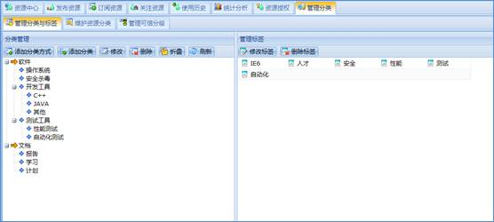
图 管理分类方式与标签
4.13.4.1.1 分类方式管理
通过分类方式管理目录工具栏的“添加分类方式”按钮添加分类方式；通过工具栏或者右键菜单的“修改”、“删除”按钮修改、删除分类方式。其中添加、修改分类方式时，分类方式不能重名。
4.13.4.1.2 分类管理
分类方式添加完成后可以对分类方式进一步地细分为分类。在分类方式管理目录中选择一个分类方式或分类，通过工具栏或者右键菜单的“添加分类”、“修改”、“删除”添加、修改、删除分类。
4.13.4.1.3 标签管理
在我的资源中上传资源时可以添加标签，对资源进行补充说明。通过管理标签工具栏或者右键菜单的“修改标签”、“删除标签”修改或者删除标签。
4.13.4.2 维护资源分类
用户上传的资源都会按照资源分类方式进行描述，系统管理员可以对这些分类方式进行调整，描述有偏差的资源可以调整到其它分类方式。
具体步骤：在左侧分类方式管理目录中选择一个分类方式或分类，在右侧的资源列表中选中一个资源，使用工具栏或者右键菜单的“重置资源分类”按钮，系统弹出选择分类界面。在选择分类界面重新勾选分类方式或分类后点击“确定”，该资源将显示在分类方式管理目录中相应的分类方式或分类下。维护资源分类方式界面如下图所示。
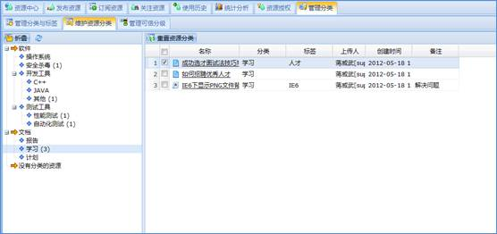
图 维护资源分类方式
4.13.4.3 管理可信分级
用户上传资源的每一个版本，系统管理员都可以设定可信等级。在管理可信分级列表中选择一个或者多个资源版本，通过工具栏的“设置可信等级”按钮设置可信等级。设置可信等级成功后，勾选工具栏的“隐藏已分级的资源”复选框，在管理可信分级列表中只能查看到未分级的资源。如下图所示。
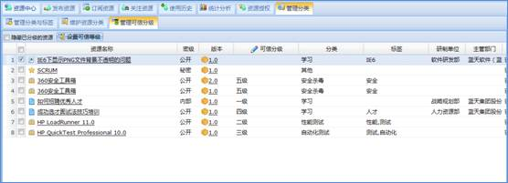
图 管理可信分级
4.13.5.1 权限管理
权限管理主要是对普通用户进行分类授权、资源授权、分配角色，如下图所示。
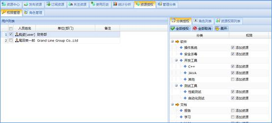
图 权限管理
4.13.5.1.1 分类授权
在用户列表中选择一个或多个用户，在分类授权列表中勾选相应分类的添加资源权限为用户授权，此时被授权的用户才能够将资源添加到相应分类下。在用户列表中选择一个或多个用户，在分类授权列表中勾选掉相应分类的添加资源权限去掉用户的分类权限。
4.13.5.1.2 资源授权
系统管理员为每一位普通用户进行资源授权，相应的资源被授权后，普通用户才能够查阅、修改并下载该资源。资源授权只针对非公开级别的资源，公开资源不需要授权普通用户就可以查阅并下载，但是没有修改权限。权限分为“读”、“读写”权限，有“读写”权限的普通用户能够修改资源，仅有“读”权限的用户可以查阅、下载资源。
在用户列表中选择一个或多个用户，使用用户列表工具栏的“批量添加资源”为选中的用户授予资源读或读写的权限。也可以在用户列表中选择一个用户，使用资源权限列表工具栏或右键菜单的“添加”为选中的用户授予资源读或读写的权限。在资源权限列表中选择一个资源，使用工具栏或右键菜单的“删除”删除选择的资源。在资源权限列表中选择一个资源，使用工具栏或右键菜单的“读”或“读写”修改资源的权限。如下图所示。
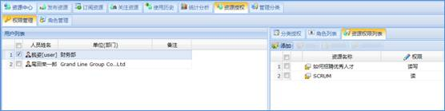
图 资源权限列表
4.13.5.1.3 角色分配
系统管理员为普通用户进行角色分配，在用户列表中选择一个或多个用户，然后在角色列表中勾选一个或多个角色为用户分配角色，用户被分配到角色后，享有该角色所拥有的分类权限和资源权限；在用户列表中选择一个或多个用户，然后在角色列表中勾选掉一个或多个角色为用户去掉角色。
4.13.5.2 角色管理
角色管理主要是为系统管理员提供添加、修改、删除角色和设置角色权限的功能，主要操作界面如下图所示。
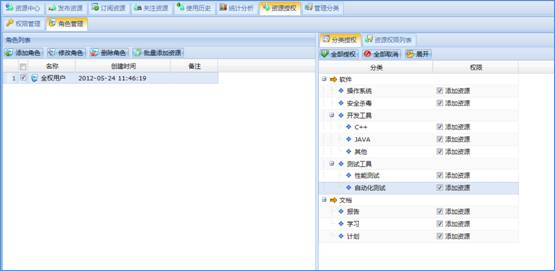
图 角色管理
4.13.5.2.1 角色
在角色列表中通过工具栏或者右键菜单的“添加角色”添加角色；在角色列表中选择一个角色，通过工具栏或右键菜单的“修改角色”、“删除角色”修改和删除角色。
4.13.5.2.2 分类授权
在角色列表中选择一个或多个角色，然后在分类授权列表中勾选相应分类的添加资源权限为角色授权。在角色列表中选择一个或多个角色，在分类授权列表中勾选掉相应分类的添加资源权限为角色去掉分类权限。
4.13.5.2.3 资源授权
在角色列表中选择一个角色，使用资源权限列表工具栏或右键菜单的“添加”为选中的角色授予资源读或读写的权限。在资源权限列表中选择一个资源，使用工具栏或右键菜单的“删除”删除被选资源读或读写的权限。在资源权限列表中选择一个资源，使用工具栏或右键菜单的“读”或“读写”修改资源的权限。
我发布的资源列表中显示了用户自己上传的所有资源，可以对自己上传的资源进行统一管理，界面如下图所示。
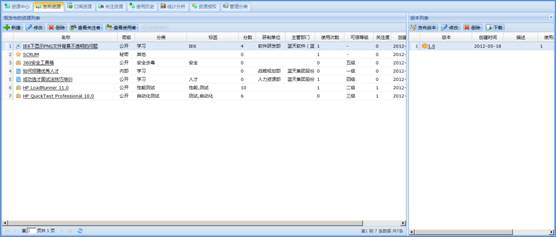
图 我发布的资源列表
4.13.6.1 资源基本管理
在我的资源列表中通过工具栏或者右键菜单的“新建”、“修改”、“删除”按钮可以添加、修改、删除资源。
注意：新建资源时，如果管理员没给普通用户授予分类的权限，那么在新建资源界面中选择分类时将弹出空界面，无法新建资如下图所示。
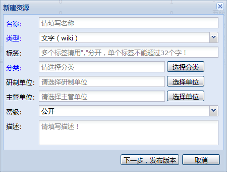
图 新建资源
4.13.6.2 资源版本基本管理
在新建资源界面，点击“下一步，发布版本”按钮跳转到创建版本界面，在该界面可以指定版本号，然后选择“下一步，提交文件”按钮跳转到提交文件界面，在提交文件界面可以将资源附件上传到系统中。使用版本列表工具栏的“发布版本”按钮也可以指定版本号并将资源附件上传到系统里。
在版本列表中选择一个版本，使用工具栏或者右键菜单的“修改版本”、“删除版本”、“下载”按钮可以重新上传附件、删除版本、下载资源版本。
4.13.6.3 查看资源和资源版本信息
在资源列表和版本列表中，点击资源名称链接或者是版本号链接，可以查阅资源信息、版本信息以及其他用户对资源的评论，还可以修改资源信息，重新上传资源附件、发布新的资源版本，主要操作界面如下图所示。
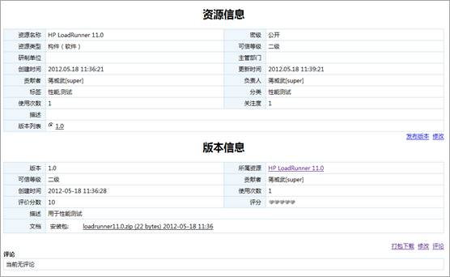
图 查看资源信息和版本信息
4.13.6.4 资源授权
保密级别为非公开级别的资源，默认只有资源创建者和系统管理员可以进行查阅、修改或者下载，其他用户如果想使用该资源，需由管理员或者资源创建者进行授权；在我的资源列表中任意选中某一密级为非公开级别的资源，通过工具栏或者右键菜单的“资源授权”按钮授权。
4.13.6.5 查看资源使用者和资源关注者
通过我的资源列表工具栏或者右键菜单的“资源关注者”和“资源使用者”可以查看资源的关注和使用者。
我关注的资源列表显示了登录系统的用户关注的所有资源。在列表中选择一个或多个指定资源，通过工具栏的“取消关注”按钮取消关注，操作界面如下图所示。
将某资源设定为关注资源后，该资源发布新版本，将给关注者发送邮件通知。
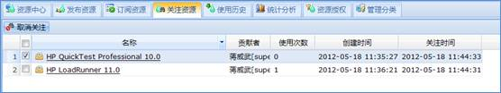
图 我关注的资源
我使用的资源列表中显示了登录系统的用户使用过的所有资源。在列表中选择一个或多个资源，通过工具栏的“关注资源”按钮设置关注资源，界面如下图所示。
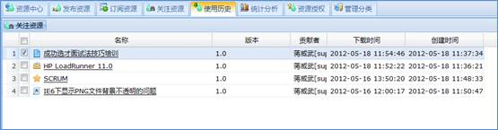
图 我使用的资源
在订阅资源列表中通过“订阅”按钮用户可以订阅自己喜欢的资源。某分类下的资源被订阅后，该资源发布版本或者更新版本后，订阅该资源的用户可以收到相关邮件通知，界面如下图所示。
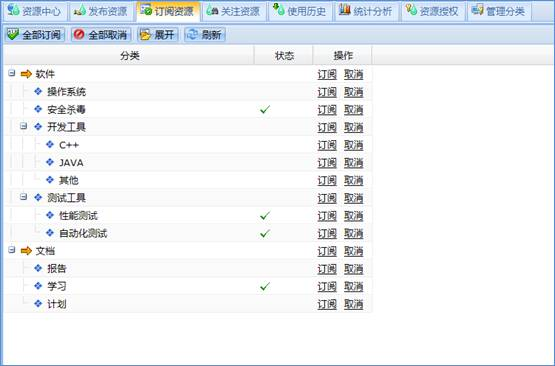
图 订阅分类方式
资源中心列表默认展示了资源库中所有公开的资源以及登录用户拥有“读”、“读写”权限的非公开资源。
4.13.10.1 检索资源
在资源中心列表中可以按照指定条件过滤，检索出自己需要的资源，可以进行简单检索，也可以进行高级检索。
简单检索是按照资源名称、资源分类方式分类进行模糊或精确检索。
高级检索是按照资源名称、资源分类方式分类、标签、描述、类型、贡献者进行检索，其中资源名称、标签、描述可以进行模糊或精确检索，操作界面如下图所示。
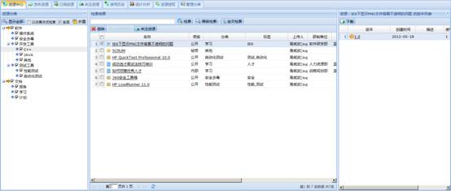
图 检索资源
4.13.10.2 资源和版本信息管理
在检索结果列表中点击资源名称链接，系统弹出资源信息和版本信息页面。在该界面的资源信息中版本列表一项中点击版本号链接可以查阅资源版本信息。如果用户拥有该资源的“读写”权限，那么在资源信息和版本信息页面该用户可以修改资源信息和版本信息，还可以发布版本，对版本信息进行评论。操作界面如下图所示。
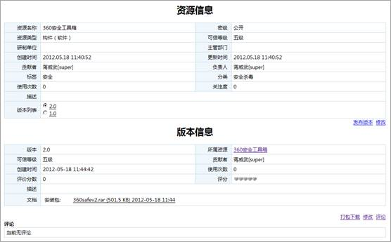
图 资源和版本信息
4.13.10.3 全文检索
在资源中心的工具栏输入要检索的关分类，然后选择“检索”按钮，即可资源名称、资源版本、标签、分类、版本中上传的文档范围内检索到自己要查找的内容，管理员拥有“重建索引”和“即时索引”的权限，主要操作。
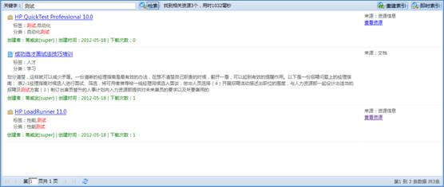
图 资源库全文检索
统计分析提供了按照人员、分类、下载情况、标签、单位分别统计资源数量的功能，并以图表的形式清晰直观的展示。
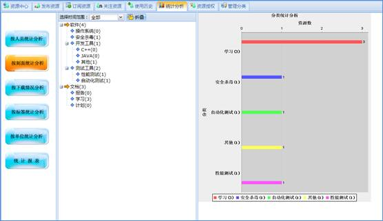
图 资源统计分析图